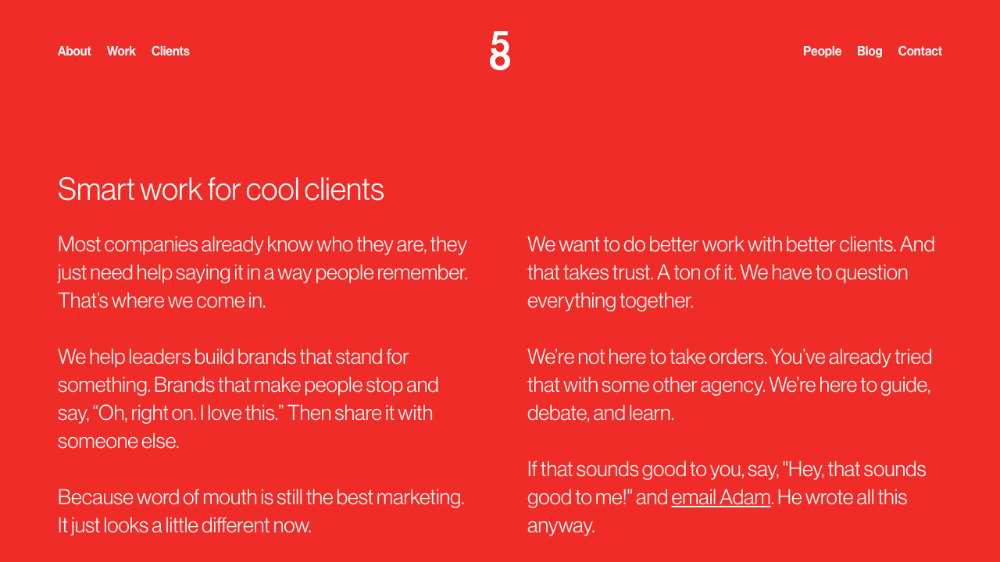
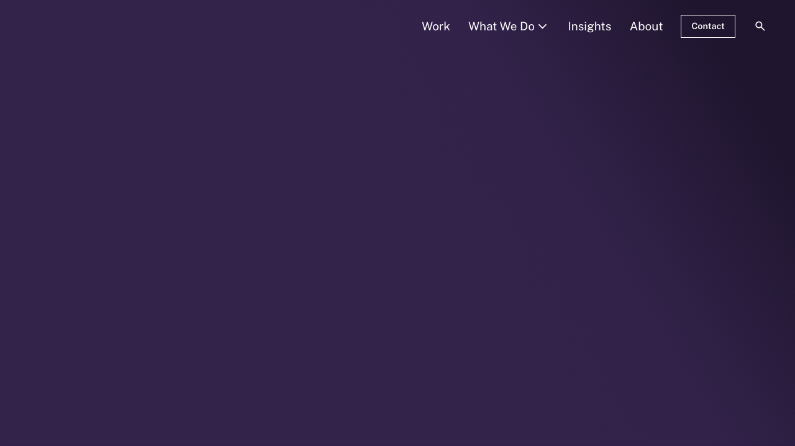
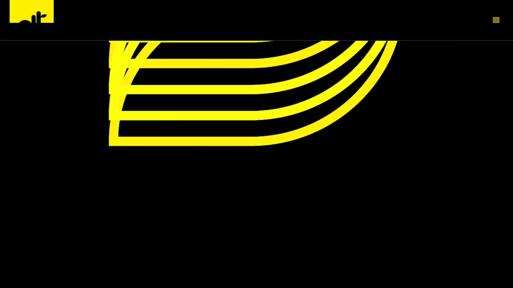
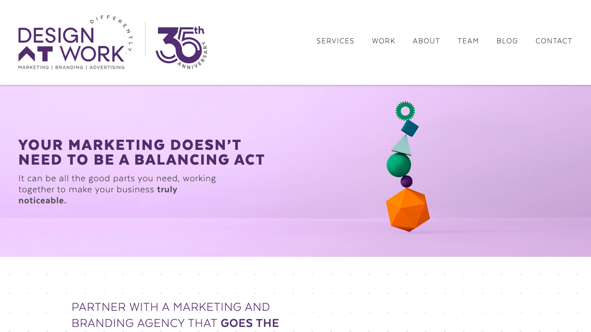
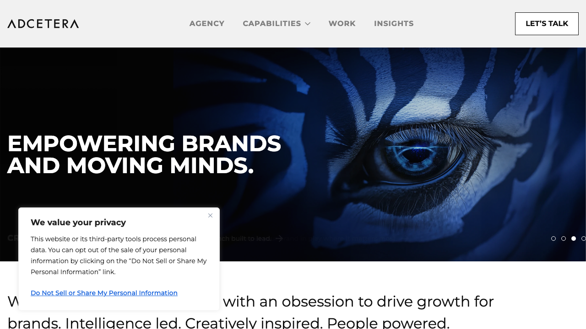
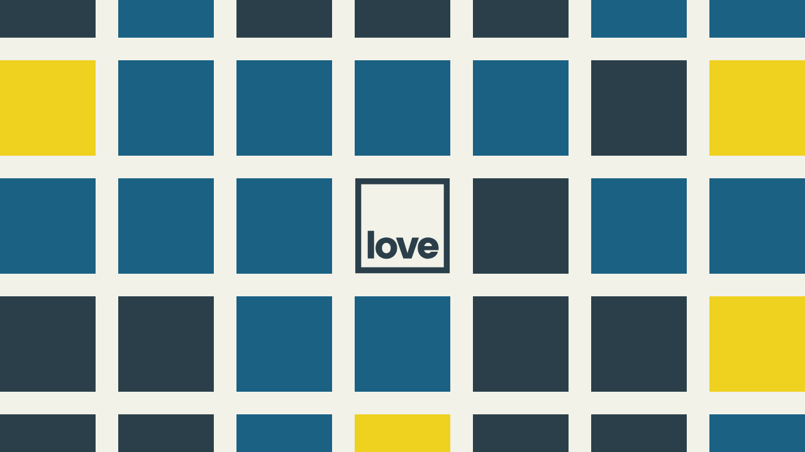
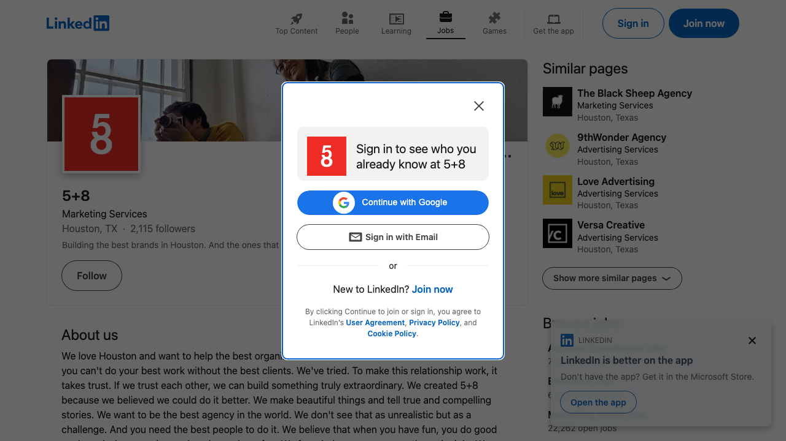
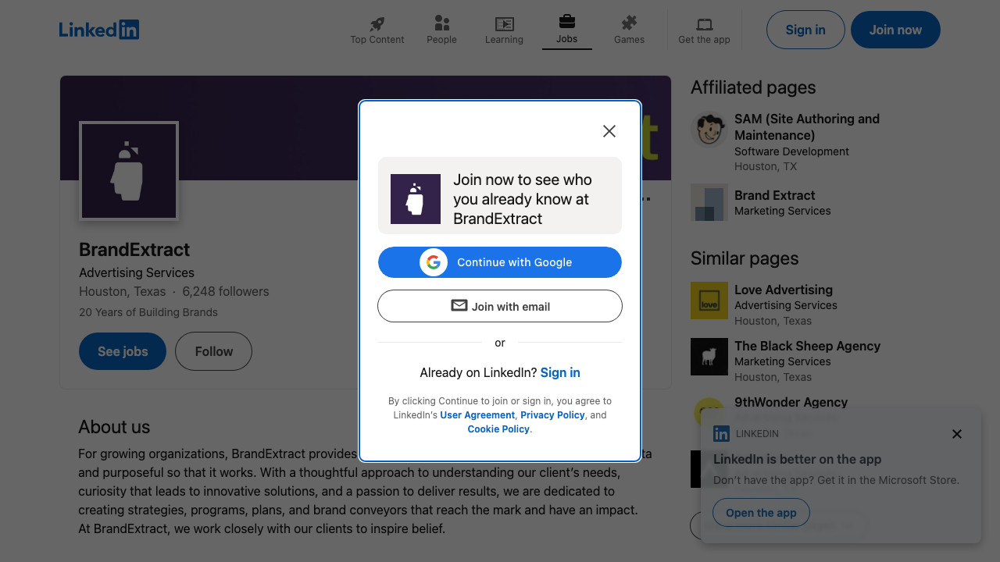
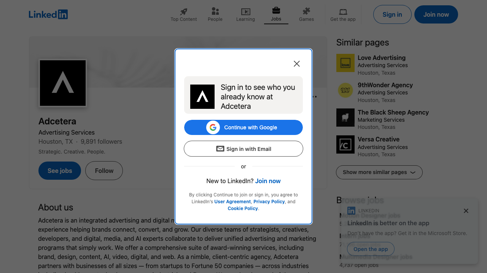
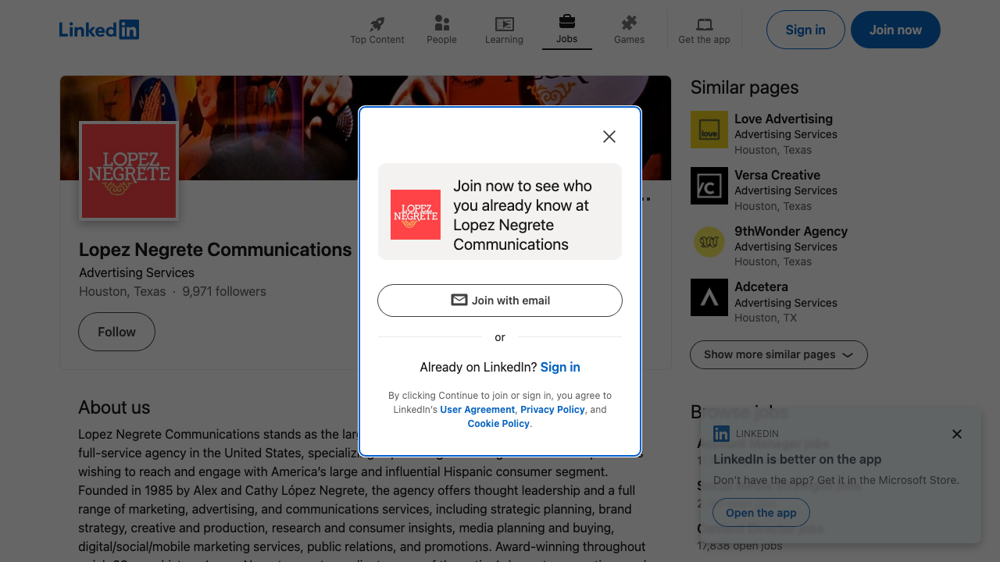

Biggest Pattern
Most agencies sound more polished than personal. The market is full of "full-service," "results-driven," and "award-winning" language. That creates room for a voice that feels sharper, more human, and less committee-written.
This review maps 5+8 against Houston branding and advertising agencies that a client could realistically compare against in a pitch, referral, or shortlist. The point is not just who exists. The point is how they frame themselves, where they look strongest, and what lane still feels ownable.
Houston does not have one agency market. It has at least four overlapping ones: large integrated firms built for stakeholder confidence, strategy-heavy brand consultancies, boutique creative shops with stronger taste signals, and outsourced growth partners built around execution and retention. 5+8 sits closest to the boutique creative end, but it can win upstream when the client wants strategic thinking without the corporate drag.
Most agencies sound more polished than personal. The market is full of "full-service," "results-driven," and "award-winning" language. That creates room for a voice that feels sharper, more human, and less committee-written.
BrandExtract, Ell Creative, Design At Work, Love Advertising, and Black Sheep sit closest to 5+8 by feel, buyer overlap, or agency size logic. Adcetera, Versa, and Lopez Negrete apply pressure from larger or more specialized positions.
LinkedIn is the cleanest public battleground for agency self-promotion in Houston. Websites do the heavy lifting on positioning. Instagram and TikTok show up more often with boutique and culture-driven shops. Public proof of self-promotional PPC was limited in this pass.
5+8 can own the lane of senior-level strategy with actual taste and personality. That is different from enterprise-safe, purpose-only, or performance-only positioning.
Clients do not buy Houston agencies by category alone. They buy based on the kind of reassurance they need. The same company might shortlist a different set of agencies depending on whether the problem feels like brand, growth, culture, or politics.
Adcetera, Lopez Negrete, and other larger firms sell breadth, process, channel sophistication, and the confidence that they can survive procurement, legal, and cross-functional review.
BrandExtract plays here. The pitch is not just creative quality. It is organizational alignment, B2B brand architecture, internal adoption, and measurable business lift.
5+8, Ell Creative, Love Advertising, and Black Sheep benefit when the client wants an agency that feels real, interesting, and close to the work.
Design At Work and Versa lean into sustained support, channel execution, and retained partnership. Buyers here want fewer fires, more consistency, and easier day-to-day management.
The most useful way to read this market is not "Who is another branding agency?" It is "What kind of comfort is this buyer trying to purchase?"
This is a location-based and category-fit read of Houston agencies that could overlap with 5+8 in referral sets, shortlist conversations, or broader market perception.
A small Houston agency with a distinct voice, strong taste signals, and a more personal way of talking about strategy, design, and client work. The site reads warmer and more alive than the category average.
5+8 already feels different. The main job is making that difference look intentional and scalable, not accidental or small.
BrandExtract sells B2B brand strategy, internal alignment, brand architecture, and business impact. The language is more executive and operational than emotional.
This is the sharpest challenge when the buyer wants strategy depth and leadership-room confidence. 5+8 should not try to out-corporate them. It should sound sharper, clearer, and more alive.
Ell Creative reads as a smaller creative shop with a more polished lifestyle and brand-forward feel. It signals creative range and human connection more than enterprise process language.
Overlap here is chemistry, visual confidence, and boutique appeal. 5+8 can differentiate with stronger strategic clarity and a more explicit business case.
Design At Work positions itself as an outsourced marketing department and growth partner. The tone is practical, retained, and relationship-oriented.
This is pressure on accounts that want a partner to stay embedded. 5+8 should decide whether it wants to compete for that retained-operator lane or stay more selective and high-touch.
Adcetera is a bigger integrated player with digital, media, sports, and emerging AI language woven into the story. It signals breadth and capability.
5+8 should not chase them on scale. The smarter move is making small feel like senior, focused, and high-conviction.
Love Advertising carries local reputation, longevity, awards, and full-service credibility. It feels established and familiar in the Houston market.
This is less about sounding newer and more about sounding sharper. 5+8 can win when the client wants conviction and freshness without sacrificing trust.
The Black Sheep Agency leans hard into values, B Corp credibility, and mission-aligned work. It sells belief as much as capability.
This is a reminder that owning a point of view matters. 5+8 does not need to mimic the purpose lane, but it should be equally clear about what it believes and how it works.
Versa leans more directly into digital marketing, lead generation, PPC, and measurable growth. The pitch is results-forward and channel-specific.
5+8 should not drift into generic growth-agency language. If performance matters, it needs to connect strategy and creative to commercial outcomes in its own voice.
Lopez Negrete occupies a larger multicultural lane with category authority, scale, and enterprise recognition. The story is less boutique and more specialized leadership.
5+8 does not need to out-scale this lane. It can own a more nimble, more personal version of cultural intelligence when the client wants sharp thinking without a giant-machine feel.
The competitive story changes by channel. In Houston, the website is still the main positioning tool, LinkedIn is the strongest public credibility layer, and social tends to separate boutiques from more formal firms.
The larger agencies read broader and safer. The stronger boutiques feel more opinionated. 5+8 performs well here because the site sounds like a person wrote it and not an internal committee.
BrandExtract, Adcetera, Lopez Negrete, and Love use LinkedIn in a way that reinforces confidence, hiring, thought leadership, and momentum. If 5+8 wants more enterprise consideration, LinkedIn matters more than most creative shops want to admit.
Smaller agencies and more design-led shops signal more life through Instagram, TikTok, and adjacent social surfaces. Ell Creative fits here. This is where 5+8 can look more magnetic than the firms that only feel polished.
In this pass, direct public confirmation of self-promotional PPC was limited. Google live checks hit reCAPTCHA and Bing did not render reliable results in automation. The stronger visible pressure appears SEO-led and content-led, not obviously paid-self-promo-led. Adcetera and Versa clearly market paid search capabilities on-site, which signals capability, but not necessarily confirmed spend on their own agency acquisition.
Inference note: the PPC read above is directional, not absolute. Public search checks were partially blocked, so this section should be treated as a market signal read rather than a perfect media audit.
The market has plenty of polished agencies. It has plenty of claims about results. What it does not have enough of is strategy and creative that feel unmistakably smart, current, and human at the same time.
There is room for an agency that sounds strategic without sounding airless. 5+8 can make clients feel like they are getting senior thinking from people they actually want to be in a room with.
The risk for a sharp boutique is reading small. The answer is not becoming blander. It is packaging voice, point of view, and case studies in a way that feels deliberate and repeatable.
Competitors like BrandExtract and Adcetera win because buyers can see the business logic from across the room. 5+8 should connect its creative strength to clearer strategic and commercial outcomes.
The website can carry the voice. LinkedIn should carry the trust: smart case-study framing, client wins, points of view, and signs that the agency can hold its own with serious operators.
5+8 does not sound generic. That matters. The work feels closer to people, culture, and taste than many Houston competitors.
The more human and personality-led the brand feels, the more important it becomes to show process, business fluency, and proof that the agency can handle bigger stakes.
There is room between the enterprise-safe agencies and the purely vibe-driven boutiques. That middle lane is attractive if 5+8 claims it on purpose.
BrandExtract, Adcetera, and long-established shops can make nervous buyers feel safer. 5+8 needs a public signal system strong enough to reduce that gap.
Here are a few ways to articulate what 5+8 can own without collapsing into generic agency language.
Big enough to think strategically. Small enough to stay close to the work. Better taste, fewer layers, no dead language.
The market has no shortage of polished agencies. What is rarer is an agency that feels smart, direct, and genuinely human.
For brands that need serious thinking but do not want a brand deck that sounds like it was written by twelve stakeholders and a legal team.
Local enough to understand the market, sharp enough to avoid the stale ways Houston agencies often talk about themselves.
A quick visual check of how these agencies show up across site and LinkedIn. This is useful for tone, polish, and public proof, not just for aesthetics.










Blocked or low-signal captures were intentionally left out of this gallery. That includes Google reCAPTCHA pages and LinkedIn pages that did not surface a usable public view.